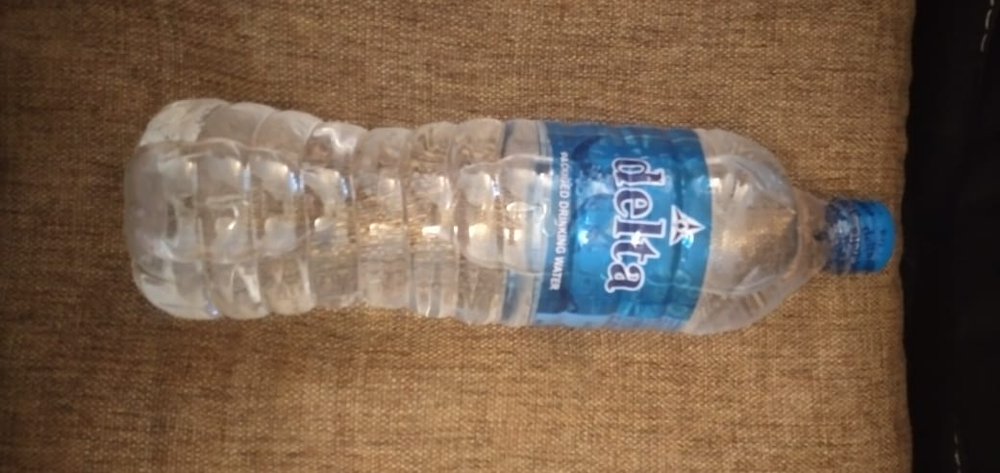
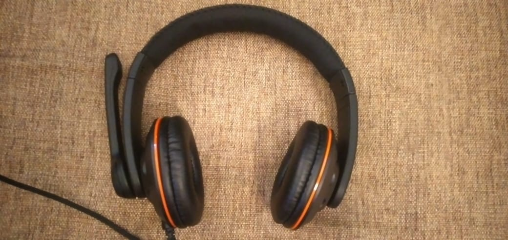
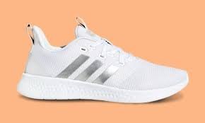
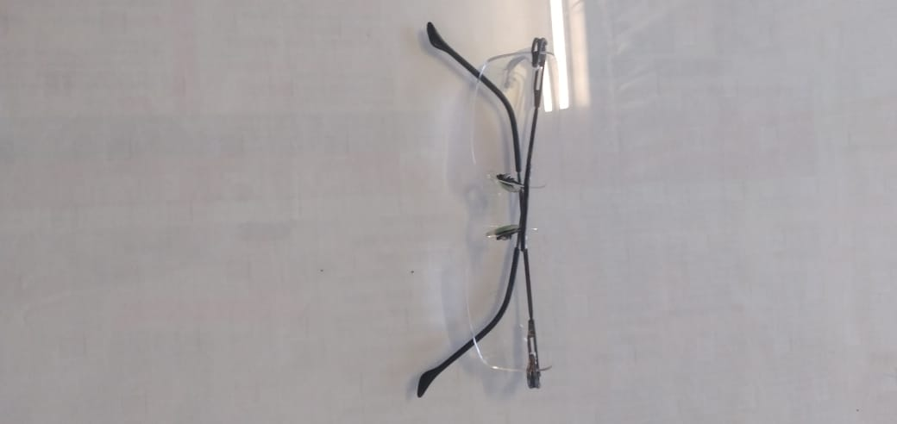
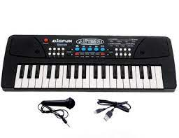
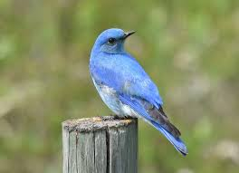
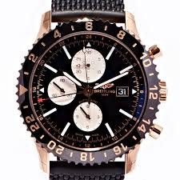

- Test Image - 
- Test Image - 
- Test Image - 
- Test Image - 
-
Test Image -

- Test Image - 
- Test Image - 
- Test Image - 
-
Test Image -

Output on Wolfram Project - bottle
Output on Mobilenet Model - water bottle
Result -
Mobilenet Model Is More Accurate
Output on Wolfram Project - switch
Output on Mobilenet Model - headphone
Result -
Both Are Not More Accurate
Output on Wolfram Project - cleats
Output on Mobilenet Model - running shoe
Result -
Mobilenet Model Is More Accurate
Output on Wolfram Project - eyeglasses
Output on Mobilenet Model - sunglass
Result -
Wolfram Language Is More Accurate
Output on Wolfram Project - scissors
Output on Mobilenet Model - can opener, tin opener
Result -
Wolfram Language Is More Accurate
Output on Wolfram Project - keyboard
Output on Mobilenet Model - harmonica, mouth organ, harp, mouth harp
Result -
Wolfram Language Is More Accurate
Output on Wolfram Project - Baltimore oriole
Output on Mobilenet Model - brambling, Fringilla montifringilla
Result -
Wolfram Language Is More Accurate
Output on Wolfram Project - nail polish
Output on Mobilenet Model - purse
Result -
Both Are Not More Accurate
Output on Wolfram Project - bedroom
Output on Mobilenet Model - bathtub, bathing tub, bath, tub
Result -
Wolfram Language Is More Accurate
I have tested 10 images
Mobilenet have predicted 2 of them correctly. And Wolfram Language have predicted 5 of them correctly. And Mobilenet and Wolfram Language have not predicted 3 of them uncorrectly.
So according to my case study Wolfram Language is more Accurate
This Case Study By - Yaswa S. Tamang
my@info.com Instagram© Copyright 2015 Company Name. All rights reserved.
The Copyright Act, 1957 (the ‘Act’) came into effect from January 1958. The Act has been amended five times since then, i.e., in 1983, 1984, 1992, 1994, 1999 and 2012. The Copyright (Amendment) Act, 2012 is the most substantial. The main reasons for amendments to the Copyright Act, 1957 include to bring the Act in conformity with two WIPO internet treaties concluded in 1996 namely, the WIPO Copyright Treaty (“WCT”) and WIPO Performances and Phonograms Treaty (“WPPT”); to protect the Music and Film Industry and address its concerns; to address the concerns of the physically disabled and to protect the interests of the author of any work; Incidental changes; to remove operational facilities; and enforcement of rights. Some of the important amendments to the Copyright Act in 2012 are extension of copyright protection in the digital environment such as penalties for circumvention of technological protection measures and rights management information, and liability of internet service provider and introduction of statutory licenses for cover versions and broadcasting organizations; ensuring right to receive royalties for authors, and music composers, exclusive economic and moral rights to performers, equal membership rights in copyright societies for authors and other right owners and exception of copyrights for physically disabled to access any works.
Please Don't Copy The Entire Things.